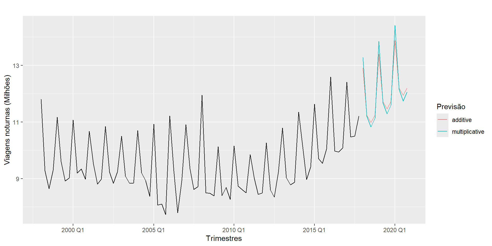

Modelos de Suavização Exponencial
Professor: Pedro M. Almeida-Junior
Universidade Estadual da Paraíba
Modelo de decomposição
Toda série temporal pode ser decomposta em três componentes, como segue,
\[ Z_t = T_t + S_t + \epsilon_t, \]
em que \(T_t\) é a tendência, \(S_t\) é a sazonalidade e \(\epsilon_t\) é um componente aleatório, de média zero e variância \(\sigma^2_{\epsilon}\).
Séries livres de tendência e sazonalidade
O interesse principal em considerar um modelo de decomposição será o de estimar a tendência \(\hat T_t\) ou \(\hat S_t\) e construir séries livres de tendência ou sazonalidade. Isto é,
\[ Z_t^* = Z_t - \hat S_t \quad \text{ (Sem sazonalidade) } \]
ou
\[ Z_t^* = Z_t - \hat T_t \quad \text{ (Sem tendência) } \]
Tendência Polinomial
Um procedimento bastante comum para estimar a tendência, é o modelo de tendência polinomial,
\[ T_t = \beta_0 + \beta_1 t + \beta_2 t^2 + \cdots + \beta_p t^p, \]
em que \(p\) é o grau do polinômio e tem que ser menor que o número de observações. Para estimar os parâmetros \(\beta_j\) utiliza-se o método dos mínimos quadrados, ou seja, se resume a um problema de regressão linear.
Modelos de suavização exponencial
- Os métodos de previsões em séries temporais, em geral, baseia-se na ideia de que observações passadas contêm informações sobre o padrão de comportamento da série temporal.
- Uma técnica utilizada para entender esse comportamento da série ao longo do tempo são os modelos de suavização exponencial.
- Essas técnicas buscam suavizar os valores de uma série baseado no comportamento mais recente da série.
Modelos para séries localmente constantes
Vamos considerar inicialmente o caso de uma série temporal \(Z_1, \ldots, Z_N\), localmente composta de seu nível mais um ruído aleatório, isto é,
\[ Z_t=\mu_t+a_t, \quad t=1, \ldots, N, \]
onde \(E\left(a_t\right)=0, \operatorname{Var}\left(a_t\right)=\sigma_a^3\) e \(\mu_t\) é um parâmetro desconhecido, que pode variar lentamente com o tempo.
Médias móveis simples
Procedimento
A técnica de média móvel consiste em calcular a média aritmética das \(r\) observaçōes mais recentes, isto é.
\[ M_t=\frac{Z_t+Z_{t-1}+\cdots+Z_{t-r+1}}{r} \]
ou
\[ M_t= M_{t-1} + \frac{Z_t-Z_{t-r}}{r} \]
Assim, \(M_t\) é uma estimativa do nível \(\mu_t\) que nāo leva em conta (ou nāo pondera) as observações mais antigas, o que é razoável devido ao fato do parâmetro variar suavemente com o tempo.
Previsāo
A previsāo de todos os valores futuros é dada pela última média móvel calculada, isto é,
\[ \hat{Z}_t(h)=\hat{Z}_{t-1}(h+1)+\frac{Z_t-Z_{t-r}}{r}, \quad \text {,h }>0 . \]
A equação acima pode ser interpretada como um mecanismo de atualização de previsāo, pois a cada instante (ou a cada nova observaçāo) corrige a estimativa prévia \(\operatorname{de} Z_{t+h}\).
Determinação de \(r\) (tamanho do janelamento)
- As propriedades do método dependem do número de observaçōes utilizadas na média (valor de \(r\) ).
- Um valor grande de \(r\) faz com que a previsão acompanhe lentamente as mudanças do parâmetro \(\mu_t\).
- Um valor pequeno implica numa reaçāo mais rápida.
Casos extremos para r:
(i) se \(r=1\), então o valor mais recente da série é utiliządo como previsão de todos os valores futuros (este é o tipo de previsāo mais simples que existe e é denominado “método ingênuo”);
(ii) se \(r=N\), então a previsão será igual à média aritmética de todos os dados observados.
Como podemos encontrar um \(r\) ‘ótimo’ para o nosso problema ?
Não existe uma resposta exata para esta pergunta, porém o que podemos fazer é escolher, por exemplo, o valor de \(r\) que forneça a melhor previsão.
Vantagens e desvantagens da Média Móvel Simples
Vantagens
As principais vantagens sāo:
(i) simples aplicação;
(ii) é aplicável quando se tem um número pequeno de observações;
(iii) permite uma flexibilidade grande devido à variação de \(r\) de acordo com o padrão da série:
Desvantagens
As principais desvantagens são:
(i) deve ser utilizado somente para prever séries estacionárias, caso contrário a precisão das previsões obtidas será muito pequena, pois os pesos atribuídos às \(r\) observaçōes são todos iguais e nenhum peso é dado às observaçōes anteriores a esse período;
(ii) necessidade de armazenar pelo menos \((r-1)\) observações; e
(iv) dificuldade em determinar o valor de \(r\).
Suavização exponencial simples (SES)
- Em séries temporais é razoável pensar que as informações mais recentes tenham um peso maior que as informações mais antigas. Este é exatamente o conceito por trás da suavização exponencial simples.
- As previsões são calculadas usando médias ponderadas, onde os pesos diminuem à medida que as observações ficam mais longe do tempo atual.
Procedimento
Suavização exponencial simples pode ser descrita matematicamente por
\[ \hat{y}_{T+1 \mid T}=\alpha \, y_T+\alpha(1-\alpha) \,y_{T-1}+\alpha(1-\alpha)^2 \, y_{T-2}+ \, \cdots, \]
Onde \(0 \leq \alpha \leq 1\) é o parâmetro de suavização. A previsão um passo à frente para o tempo \(T+1\) é uma média ponderada de todas as observações na série \(y_1, \ldots, y_T\).
A taxa na qual os pesos diminuem é controlada pelo parâmetro \(\alpha\).
Exemplo: Aplicação dos pesos
A tabela abaixo mostra os pesos anexados às observações para quatro valores diferentes de \(\alpha\) ao prever usando suavização exponencial simples. Observe que a soma dos pesos, mesmo para um pequeno valor de \(\alpha\) será aproximadamente um para qualquer tamanho de amostra razoável.
\[ \begin{array}{lcccc} & \alpha=0,2 & \alpha=0,4 & \alpha=0,6 & \alpha=0,8 \\\hline y_T & 0,2000 & 0,4000 & 0,6000 & 0,8000 \\\hline y_{T-1} & 0,1600 & 0,2400 & 0,2400 & 0,1600 \\\hline y_{T-2} & 0,1280 & 0,1440 & 0,0960 & 0,0320 \\\hline y_{T-3} & 0,1024 & 0,0864 & 0,0384 & 0,0064 \\\hline y_{T-4} & 0,0819 & 0,0518 & 0,0154 & 0,0013 \\\hline y_{T-5} & 0,0655 & 0,0311 & 0,0061 & 0,0003\end{array} \]
Comportamento de \(\alpha\)
- Para qualquer \(\alpha\) entre 0 e 1 , os pesos atribuídos às observações diminuem exponencialmente à medida que voltamos no tempo, daí o nome “suavização exponencial”.
- Se \(\alpha\) é pequeno (isto é, próximo de 0), mais peso é dado às observações do passado mais distante. Se \(\alpha\) é grande (ou seja, próximo de 1), mais peso é dado às observações mais recentes.
Determinaçāo da constante \(\alpha\)
Quanto menor for o valor de \(\alpha\) mais estáveis serão as previsões finais, uma vez que a utilização de baixo valor de \(\alpha\) implica que pesos maiores serão dados às observaçōes passadas e, conseqüentemente, qualquer flutuação aleatória, no presente, exercerá um peso menor no cálculo da previsāo.
Brown (1962) faz alguns comentários sobre a determinaçāo dessa constante, de acordo com alguns critérios, tais como tipo de autocorrelação entre os dados e custo de previsäo.
Um procedimento mais objetivo é selecionar o valor que fornece a “melhor previsão” das observaçōes já obtidas.
Representação alternativa
Podemos representar o modelo de suavização exponencial simples de outra maneira, através da forma de componentes.
Para SES, o único componente incluído é o nível, \(\ell_t\). (Outros métodos que são considerados posteriormente também podem incluir uma tendência \(b_t\) e um componente sazonal \(s_t\)).
As representações em forma de componentes dos métodos de suavização exponencial compreendem uma equação de previsão e uma equação de suavização para cada um dos componentes incluídos no método.
Forma do componente
A forma componente da suavização exponencial simples é dada por:
\[ \begin{align} &\text{Equação de previsão:} \quad \hat{y}_{t+h \mid t}=\ell_t \\ &\text{Equação de suavização:} \quad \ell_t=\alpha y_t+(1-\alpha) \ell_{t-1}, \end{align} \]
Onde \(\ell_t\) é o nível (ou o valor suavizado) da série no tempo \(t\).
Contexto \(h=1\) fornece os valores ajustados, enquanto configura \(t=T\) fornece as previsões verdadeiras além dos dados de treinamento.
A equação de previsão mostra que o valor da previsão no tempo \(t+1\) é o nível estimado no instante se nós substituíssemos \(\ell_t \operatorname{com} \hat{y}_{t+1 \mid t} \operatorname{ e } \ell_{t-1} \operatorname{com} \hat{y}_{t \mid t-1}\) na equação de suavização, recuperaremos a forma média ponderada da suavização exponencial simples.
Previsões fixas
A suavização exponencial simples tem uma função de previsão constante:
\[ \hat{y}_{T+h \mid T}=\hat{y}_{T+1 \mid T}=\ell_T, \quad h=2,3, \ldots \]
Ou seja, todas as previsões assumem o mesmo valor, igual ao componente de último nível. Dessa forma, podemos imaginar que se a série possui tendência ou sazonalidade as previsões não serão boas.
Método com tendência
Método de tendência linear de Holt
Holt ( 1957 ) estendeu a suavização exponencial simples para permitir a previsão de dados com tendência. Este método envolve uma equação de previsão e duas equações de suavização (uma para o nível e outra para a tendência):
\[ \begin{align} &\text{Equação de previsão: } \hat{y}_{t+h \mid t}=\ell_t+h b_t \\ &\text{Equação de nível: } \ell_t=\alpha y_t+(1-\alpha)\left(\ell_{t-1}+b_{t-1}\right) \\ &\text{Equação de tendência: } b_t=\beta^*\left(\ell_t-\ell_{t-1}\right)+\left(1-\beta^*\right) b_{t-1} \end{align} \]
em que \(\ell_t\) denota uma estimativa do nível da série no instante \(t\), \(b_t\) denota uma estimativa da tendência (inclinação) da série no instante \(t\), \(\alpha\) é o parâmetro de suavização para o nível, \(0 \leq \alpha \leq 1\), e \(\beta^*\) é o parâmetro de suavização para a tendência, \(0 \leq \beta^* \leq 1\).
Previsão método holt
Assim como na suavização exponencial simples, a equação de nível aqui mostra que \(\ell_t\) é uma média ponderada de observação \(y_t\) e a previsão de treinamento um passo à frente para o tempo \(t\), aqui dado por \(\ell_{t-1}+b_{t-1}\).
A equação de tendência mostra que \(b_t\) é uma média ponderada da tendência estimada no instante \(t\) baseado em \(\ell_t-\ell_{t-1} \operatorname{ e } b_{t-1}\), a estimativa anterior da tendência.
A função de previsão não é mais constante. A previsão \(h\) passos a frente é igual ao último nível estimado mais \(h\) vezes o último valor de tendência estimado. Portanto, as previsões são uma função linear de \(h\).
Métodos de tendência amortecida
As previsões geradas pelo método linear de Holt apresentam uma tendência constante (aumentando ou diminuindo) indefinidamente no futuro.
Evidências empíricas indicam que esses métodos tendem a superestimar, especialmente para horizontes de previsão mais longos.
Motivados por esta observação, Gardner & McKenzie ( 1985 ) introduziram um parâmetro que “amortece” a tendência para uma linha plana em algum momento no futuro.
Métodos de tendência amortecida
Em conjunto com os parâmetros de suavização \(\alpha \operatorname{ e } \beta^*\) (com valores entre 0 e 1 como no método de Holt), este método também inclui um parâmetro de amortecimento \(0<\phi<1\) :
\[ \begin{aligned}\hat{y}_{t+h \mid t} &=\ell_t+\left(\phi+\phi^2+\cdots+\phi^h\right) b_t \\\ell_t &=\alpha y_t+(1-\alpha)\left(\ell_{t-1}+\phi b_{t-1}\right) \\b_t &=\beta^*\left(\ell_t-\ell_{t-1}\right)+\left(1-\beta^*\right) \phi b_{t-1}\end{aligned} \]
\(\operatorname{se} \phi=1\), o método é idêntico ao método linear de Holt. Para valores entre 0 e 1, \(\phi\) amortece a tendência para que ela se aproxime de uma constante em algum momento no futuro.
Escolha do valor de \(\phi\)
De fato, as previsões convergem para \(\ell_T+\phi b_T /(1-\phi)\) Como \(h \rightarrow \infty\) para qualquer valor \(0<\phi<1\).
Isso significa que as previsões de curto prazo possuem tendência, enquanto as previsões de longo prazo são constantes.
Na prática, \(\phi\) raramente é inferior a 0,8, pois o amortecimento tem um efeito muito forte para valores menores.
Valores de \(\phi\) próximo de 1 significa que um modelo amortecido não pode ser distinguido de um modelo não amortecido.
Por essas razões, geralmente restringimos \(\phi\) mínimo de 0,8 e máximo de 0,98.
Métodos com sazonalidade
Holt ( 1957 ) e Winters ( 1960 ) estenderam o método de Holt para capturar a sazonalidade.
O método sazonal de HoltWinters compreende a equação de previsão e três equações de suavização - uma para o nível \(\ell_t\), um para a tendência \(b_t\), e um para o componente sazonal \(s_t\), com parâmetros de suavização correspondentes \(\alpha, \beta^*\) e \(\gamma\).
Usamos \(m\) para denotar o período da sazonalidade, ou seja, o número de estações em um ano. Por exemplo, para dados trimestrais \(m=4\), e para dados mensais \(m=12\).
Métodos aditivos e multiplicativos
Existem duas variações para este método que diferem na natureza do componente sazonal.
O método aditivo é preferido quando as variações sazonais são aproximadamente constantes ao longo da série,
O método multiplicativo é preferido quando as variações sazonais estão mudando proporcionalmente ao nível da série.
Método aditivo de Holt-Winters
A forma de componente para o método aditivo é:
\[ \begin{aligned} \hat{y}_{t+h \mid t} &=\ell_t+h b_t+s_{t+h-m(k+1)} \\\ell_t &=\alpha\left(y_t-s_{t-m}\right)+(1-\alpha)\left(\ell_{t-1}+b_{t-1}\right) \\b_t &=\beta^*\left(\ell_t-\ell_{t-1}\right)+\left(1-\beta^*\right) b_{t-1} \\s_t &=\gamma\left(y_t-\ell_{t-1}-b_{t-1}\right)+(1-\gamma) s_{t-m} \end{aligned} \]
em que \(k\) é a parte inteira de \((h-1) / m\), que garante que as estimativas dos índices sazonais utilizados para a previsão sejam provenientes do último ano da amostra.
Método multiplicativo de Holt-Winters
A forma de componente para o método multiplicativo é:
\[ \begin{aligned} \hat{y}_{t+h \mid t} &=\left(\ell_t+h b_t\right) s_{t+h-m(k+1)} \\\ell_t &=\alpha \frac{y_t}{s_{t-m}}+(1-\alpha)\left(\ell_{t-1}+b_{t-1}\right) \\b_t &=\beta^*\left(\ell_t-\ell_{t-1}\right)+\left(1-\beta^*\right) b_{t-1} \\s_t &=\gamma \frac{y_t}{\left(\ell_{t-1}+b_{t-1}\right)}+(1-\gamma) s_{t-m} . \end{aligned} \]
Taxonomia dos métodos de suavização exponencial
\[ \tiny{ \begin{array}{cccc} \text { Componente de Tendencia }& & \text { Componente de Sazonalidade } \\& \mathrm{N} & \mathrm{A} & \mathrm{M} \\\hline & \text { (None) } & \text { (Additive) } & \text { (Multiplicative) } \\\hline \mathrm{N} \text { (None) } & (\mathrm{N}, \mathrm{N}) & (\mathrm{N}, \mathrm{A}) & (\mathrm{N}, \mathrm{M}) \\\hline \text { A (Additive) } & (\mathrm{A}, \mathrm{N}) & (\mathrm{A}, \mathrm{A}) & (\mathrm{A}, \mathrm{M}) \\\hline \mathrm{A}_d \text { (Additive damped) } & \left(\mathrm{A}_d, \mathrm{~N}\right) & \left(\mathrm{A}_d, \mathrm{~A}\right) & \left(\mathrm{A}_d, \mathrm{M}\right)\end{array} } \]
Alguns desses métodos são resumidos a seguir:
\[ \tiny{ \begin{array}{ll}\text { Short hand } & \text { Method } \\\hline(\mathrm{N}, \mathrm{N}) & \text { Simple exponential smoothing } \\\hline(\mathrm{A}, \mathrm{N}) & \text { Holt's linear method } \\\hline\left(\mathrm{A}_d, \mathrm{~N}\right) & \text { Additive damped trend method } \\\hline(\mathrm{A}, \mathrm{A}) & \text { Additive Holt-Winters' method } \\\hline(\mathrm{A}, \mathrm{M}) & \text { Multiplicative Holt-Winters' method } \\\hline\left(\mathrm{A}_d, \mathrm{M}\right) & \text { Holt-Winters' damped method }\end{array} } \]
Exemplo: viagens domésticas noturnas na Austrália
- Aplicamos o método de Holt-Winters com sazonalidade aditiva e multiplicativa para prever turismo doméstico noturno na Austrália.
- O período de estudo foram os anos \(1998-2017\) e as previsões para \(2018 \text{ e } 2020\).
Comportamento da série
Codigo R
library(forecast)
library(fpp3)
aus_holidays <- tourism %>%
filter(Purpose == "Holiday") %>%
summarise(Trips = sum(Trips)/1e3)
fit <- aus_holidays %>%
model(
additive = ETS(Trips ~ error("A") + trend("A") +
season("A")),
multiplicative = ETS(Trips ~ error("M") + trend("A") +
season("M"))
)
fc <- fit %>% forecast(h = "3 years")
fc %>%
autoplot(aus_holidays, level = NULL) +
labs(title="Turismo doméstico Austrália",
y="Viagens noturnas (millions)",
x = 'Trimestres') +
guides(colour = guide_legend(title = "Forecast"))